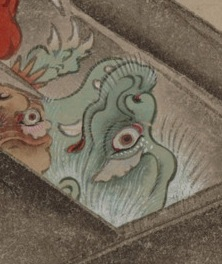

← 图鉴索引

薄緑色の肌の化物。唐櫃の中から外の様子をうかがっている。白髪で、手の爪は鋭い。
出典：親書誌：U426_nichibunken_0154：妖怪絵巻；ヨウカイエマキ／日付：2010／資源識別子：U426_nichibunken_0154_0040_0000
Copyright (c)2010- International Research Center for Japanese Studies, Kyoto, Japan. All rights reserved.